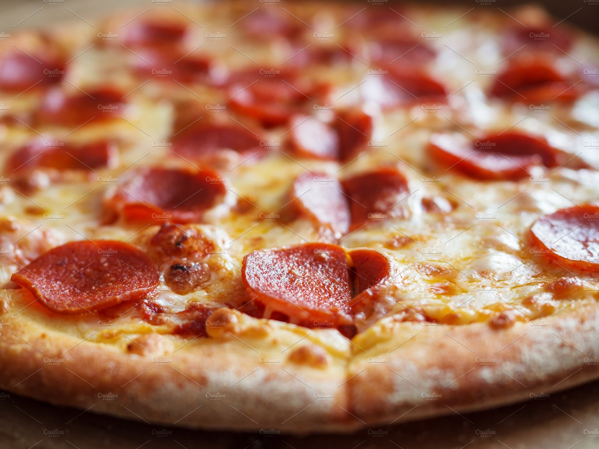

Pizza

Descriptions
This recipe is for a classic Quebec-style pizza,
which is made with pizza dough, tomato sauce,
diced pepperoni, mushrooms, onions, green peppers,
shredded mozzarella cheese, grated Parmesan cheese,
olive oil, oregano, salt and pepper. The dough is rolled out,
topped with the ingredients and baked in the oven until golden
brown and the cheese is melted and bubbly. A delicious pizza
that can be enjoyed as a main course or as a side dish.
Ingredients
- 1 lb of pizza dough
- 1/4 cup of tomato sauce
- 1/4 cup of diced pepperoni
- 1/4 cup of diced mushrooms
- 1/4 cup of diced onions
- 1/4 cup of diced green peppers
- 1 cup of shredded mozzarella cheese
- 1/4 cup of grated Parmesan cheese
- 1 tbsp of olive oil
- 1 tsp of dried oregano
- Salt and pepper to taste
Steps
- Preheat your oven to 425°F.
- Roll out the pizza dough on a floured surface to your desired thickness.
- Spread the tomato sauce evenly over the dough, leaving a small border around the edge.
- Add the pepperoni, mushrooms, onions, and green peppers on top of the sauce.
- Sprinkle the mozzarella and Parmesan cheese over the toppings.
- Drizzle the olive oil over the pizza and sprinkle with oregano, salt, and pepper.
- Place the pizza in the oven and bake for 12-15 minutes or until the crust is golden brown and the cheese is melted and bubbly.
- Let the pizza cool for a few minutes before slicing and serving.